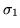

Next: Block misalignment
Up: Operations used in conjunction
Previous: Alignment fitting
This operation defines a baseline resulting from surveying errors.
The baseline must be considered like a new reference orbit. It is
obtained by two successive operations. In the first a few points on
the original reference orbit are chosen as main surveying points. In
tunnel construction they could be associated with the surveyor's
penetration points. They are accompanied by random x,y,z coordinate
errors (usually rather big : say 5 to 10 mm) The second operation
defines between the preceding basepoints intermediate points which are
obtained by successive aiming from the current point to the next
basepoint. This aiming is accompanied by a systematic aiming error
(varying from segment to segment) to which is added a random aim error
(usually smaller than the systematic error) The origin of the
systematic error can be due to the instruments used but also due to
ambient conditions under which the surveying is performed. This
operation MUST BE PRECEDED by a SEED operation. This operation is
still being tested and developped.Use at OWN RISK.
Input format
BASEline definition
npen Kxxx Kxxx .... Kxxx
nsub 
Kyyy Kyyy ..... Kyyy
Parameter definitions
npen
Kxxx
nsub
Kyyy

Next: Block misalignment
Up: Operations used in conjunction
Previous: Alignment fitting
Dobrin Kaltchev
2004-10-20